Hi, I am Aileen Xin, a UX/UI Designer.
I am a UX/UI Designer with a background in applied psychology. I am a problem solver, critical thinker and passionate idealist who strives to marry form and function in the digital space.

I am a UX/UI Designer with a background in applied psychology. I am a problem solver, critical thinker and passionate idealist who strives to marry form and function in the digital space.
Designing a social networking app to shorten the process of connecting people who share the same interests.

Redesigning the navigation system and reorganising the presentation of existing information to reduce the cognitive load for users when interacting with the website.

Redesigning a responsive website so that visitors would feel more confident and willing to make donations and apply for volunteer roles to the organisation.
Familiar with a variety of qualitative and quantitative research methodologies including user interviews and user surveys.
Skilled at understanding users’ pain points and goals, and using these to develop effective solutions to resolve problem.
Capacity to make a logical decision on the type of qualitative interview to use for each project.
Passionate about uncovering user problems and identifying opportunities to improve interface designs.